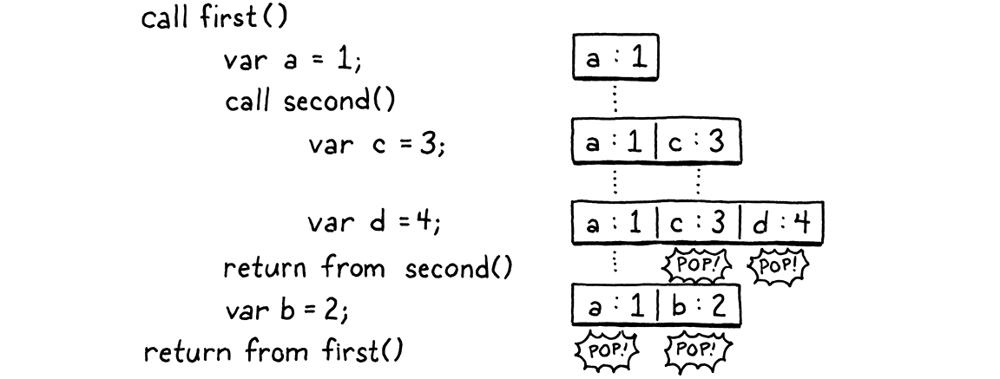
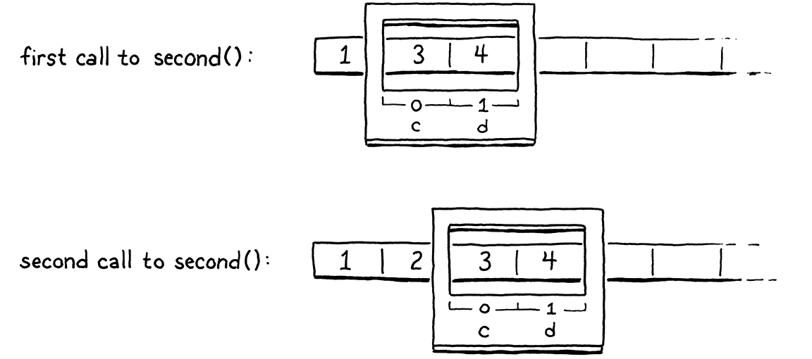
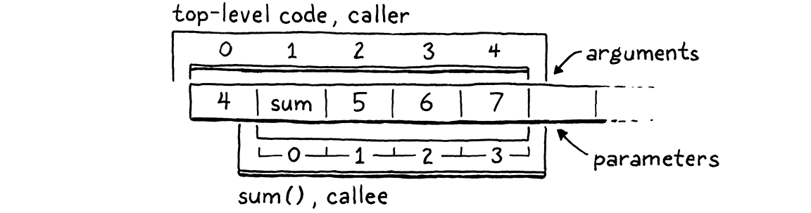
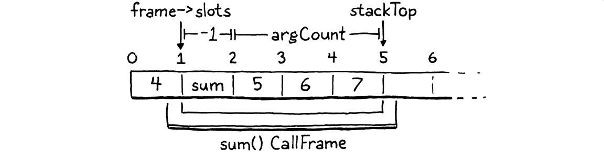
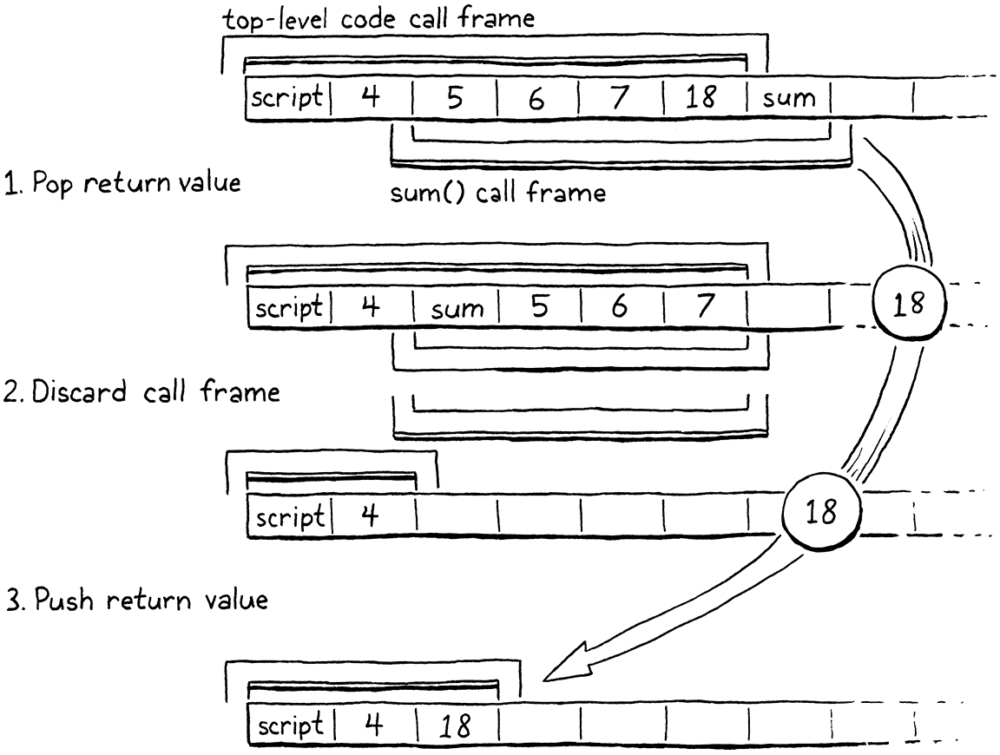

Calls and Functions
This book is a work in progress!
×If you see a mistake, find something unclear, or have a suggestion, please let me know. To learn when new chapters are up, join the mailing list:
(I post about once a month. Don’t worry, I won’t spam you.)
Any problem in computer science can be solved with another level of indirection. Except for the problem of too many layers of indirection.
David Wheeler
This chapter is a beast. I try to break features into bite-sized pieces, but sometimes you gotta swallow the whole meal. Our next task is functions. We could start with only function declarations, but that’s not very useful when you can’t call them. We could do calls, but there’s nothing to call. And all of the runtime support needed in the VM to support both of those isn’t very rewarding if it isn’t hooked up to anything you can see. So we’re going to do it all. It’s a lot, but we’ll feel good when we’re done.
24 . 1 Function Objects
The most interesting structural change in the VM is around the stack. We already have a stack for local variables and temporaries, so we’re partway there. But we have no notion of a call stack. Before we can make much progress, we’ll have to fix that. But first, let’s write some code. I always feel better once I start moving. We can’t do much without having some kind of representation for functions, so we’ll start there. From the VM’s perspective, what is a function?
A function has a body that can be executed, so that means some bytecode. We could compile the entire program and all of its function declarations into one big monolithic Chunk. Each function would have a pointer to the first instruction of its code inside the Chunk.
This is roughly how compilation to native code works where you end up with one solid blob of machine code. But for our bytecode VM, we can do something a little higher level. I think a cleaner model is to give each function its own Chunk. We’ll want some other metadata too, so let’s go ahead and stuff it all in a struct now:
struct sObj* next; };
add after struct sObj
typedef struct { Obj obj; int arity; Chunk chunk; ObjString* name; } ObjFunction;
struct sObjString {
Functions are first class in Lox, so they need to be actual Lox objects. Thus
ObjFunction has the same Obj obj header all object types share. The arity
field stores the number of parameters the function expects. Then, in addition to
the chunk, we store the function’s name. That will be
handy for reporting readable runtime errors.
This is the first time the “object” module has needed to reference Chunk, so we get an include:
#include "common.h"
#include "chunk.h"
#include "value.h"
Like we did with the other object types, we need some accessories to make functions easier to work with in C. Sort of a poor man’s object orientation. First, we’ll declare a C function to create a new Lox function:
uint32_t hash; };
add after struct sObjString
ObjFunction* newFunction();
ObjString* takeString(char* chars, int length);
The implementation is over here:
add after allocateObject()
ObjFunction* newFunction() { ObjFunction* function = ALLOCATE_OBJ(ObjFunction, OBJ_FUNCTION); function->arity = 0; function->name = NULL; initChunk(&function->chunk); return function; }
It uses the same procedure we’ve seen to allocate memory and initialize the object’s header so that the VM knows what type of object it is. Instead of passing in arguments to initialize the function like we do with other object types, we set it up in a sort of “blank” state—zero arity, no name, and no code. That will get filled in later after the function is created.
Since we have a new type of object, we need a new object type in the enum:
typedef enum {
in enum ObjType
OBJ_FUNCTION,
OBJ_STRING, } ObjType;
When we’re done with a function object, we must return the bits it borrowed back to the operating system:
switch (object->type) {
in freeObject()
case OBJ_FUNCTION: { ObjFunction* function = (ObjFunction*)object; freeChunk(&function->chunk); FREE(ObjFunction, object); break; }
case OBJ_STRING: {
This switch case is responsible for freeing the ObjFunction itself as well as any other memory it owns. Functions own their chunk, so we call Chunk’s destructor-like function.
Over in the function to print objects, we also add a case. Since we have the function’s name, we may as well use it:
switch (OBJ_TYPE(value)) {
in printObject()
case OBJ_FUNCTION: printf("<fn %s>", AS_FUNCTION(value)->name->chars); break;
case OBJ_STRING:
While we’re here, there’s a funny little edge case to handle. The implicit
function that the compiler creates to contain the top level code for a script
doesn’t have a name. If we try to print it, we’ll crash. You might correctly
note that there’s no way for a user to get a reference to that function in the
first place. But our diagnostic code that prints the entire stack when
DEBUG_TRACE_EXECUTION is defined will print it, and we don’t want that to
blow up. So:
case OBJ_FUNCTION:
in printObject()
if (AS_FUNCTION(value)->name == NULL) { printf("<script>"); break; }
printf("<fn %s>", AS_FUNCTION(value)->name->chars);
Finally, we have a couple of macros for converting values to functions. First, make sure your value actually is a function:
#define OBJ_TYPE(value) (AS_OBJ(value)->type)
#define IS_FUNCTION(value) isObjType(value, OBJ_FUNCTION)
#define IS_STRING(value) isObjType(value, OBJ_STRING)
Assuming that returns true, you can then safely cast the Value to an ObjFunction pointer using:
#define IS_STRING(value) isObjType(value, OBJ_STRING)
#define AS_FUNCTION(value) ((ObjFunction*)AS_OBJ(value))
#define AS_STRING(value) ((ObjString*)AS_OBJ(value))
With that, our object model knows how to represent functions. I’m feeling warmed up now. You ready for something a little harder?
24 . 2 Compiling to Function Objects
Right now, our compiler assumes it is always compiling to one single chunk. With each function’s code living in separate chunks, the compiler needs to switch to the function’s chunk before compiling its body. At the end of the function body, the compiler needs to return to the previous chunk it was working with.
That’s fine for code inside function bodies, but what about code that isn’t? The
“top level” of a Lox program is also imperative code and we need a chunk to
compile that into. We can simplify the compiler and VM by placing that top level
code inside an automatically-defined function too. That way, the compiler is
always within some kind of function body, and the VM always runs code by
invoking a function. It’s as if the entire program is wrapped inside an implicit main() function.
Before we get to user-defined functions, then, let’s do the reorganization to support that implicit top-level function. It starts with the Compiler struct. Instead of pointing directly to a Chunk that the compiler writes to, it will instead have a reference to the function object being built:
typedef struct Compiler {
in struct Compiler
ObjFunction* function; FunctionType type;
Local locals[UINT8_COUNT];
We also have a little FunctionType enum. This lets the compiler tell when it’s compiling top level code versus the body of a function. Most of the compiler doesn’t care about this—that’s why it’s a useful abstraction—but in one or two places the distinction is meaningful. We’ll get to one later.
add after struct Local
typedef enum { TYPE_FUNCTION, TYPE_SCRIPT } FunctionType;
Every place in the compiler that was writing to the Chunk now needs to go
through that function pointer. Fortunately, many chapters ago, we encapsulated access to the chunk in the
currentChunk() function. We only need to fix that and the rest of the compiler
is happy:
Compiler* current = NULL;
function currentChunk()
replace 5 lines
static Chunk* currentChunk() { return ¤t->function->chunk; }
static void errorAt(Token* token, const char* message) {
The current chunk is always the chunk owned by the function we’re in the middle of compiling. Next, we need to actually create that function. Previously, the VM passed a Chunk to the compiler which filled it with code. Instead, the compiler will create and return a function that contains the compiled top-level code—which is all we support right now—of the user’s program.
24 . 2 . 1 Creating functions at compile time
We start threading this through in compile(), which is the main entry point
into the compiler:
Compiler compiler;
in compile()
replace 2 lines
initCompiler(&compiler, TYPE_SCRIPT);
parser.hadError = false;
There are a bunch of changes in how the compiler is initialized. First, we clear out the new Compiler fields:
function initCompiler()
replace 1 line
static void initCompiler(Compiler* compiler, FunctionType type) { compiler->function = NULL; compiler->type = type;
compiler->localCount = 0;
Then we allocate a new function object to compile into:
compiler->scopeDepth = 0;
in initCompiler()
compiler->function = newFunction();
current = compiler;
This might seem a little strange. A function object is the runtime representation of a function, but here we are creating it at compile time. The way to think of it is that a function is similar to string and number literals. It forms a bridge between the compile time and runtime world. When we get to function declarations, those really are literals—they are a notation that produces values of a built-in type. So the compiler creates function objects during compilation. Then, at runtime, they are simply invoked.
Here is another strange piece of code:
current = compiler;
in initCompiler()
Local* local = ¤t->locals[current->localCount++]; local->depth = 0; local->name.start = ""; local->name.length = 0;
}
Remember that the compiler’s locals array keeps track of which stack slots are
associated with which local variables or temporaries. From now on, the compiler
implicitly claims stack slot zero for the VM’s own internal use. We give it an
empty name so that the user can’t write an identifier that refers to it. I’ll
explain what this is about when it becomes useful.
That’s the initialization side. We also need a couple of changes on the other end when we finish compiling some code:
function endCompiler()
replace 1 line
static ObjFunction* endCompiler() {
emitReturn();
Previously, when interpret() called into the compiler, it passed in a Chunk to
be written to. Now that the compiler creates the function object itself, we
return that function. We grab it from the current compiler:
emitReturn();
in endCompiler()
ObjFunction* function = current->function;
#ifdef DEBUG_PRINT_CODE
And then return it to compile():
#endif
in endCompiler()
return function;
}
Now is a good time to make another tweak in this function. Earlier, we added some diagnostic code to have the VM dump the disassembled bytecode so we can debug the compiler. We should fix that now that the generated chunk is wrapped in a function:
#ifdef DEBUG_PRINT_CODE if (!parser.hadError) {
in endCompiler()
replace 1 line
disassembleChunk(currentChunk(), function->name != NULL ? function->name->chars : "<script>");
} #endif
Bumping up a level to compile(), we adjust its signature:
#include "vm.h"
function compile()
replace 1 line
ObjFunction* compile(const char* source);
#endif
Instead of taking a chunk, now it returns a function. Over in the implementation:
function compile()
replace 1 line
ObjFunction* compile(const char* source) {
initScanner(source);
Finally we get to some actual code. At the very end of the function:
while (!match(TOKEN_EOF)) { declaration(); }
in compile()
replace 2 lines
ObjFunction* function = endCompiler(); return parser.hadError ? NULL : function;
}
We get the function object from the compiler. If there were no compile errors,
we return it. Otherwise, we signal an error by returning NULL. This way, the
VM doesn’t try to execute a function that may contain invalid bytecode.
Eventually, we will update interpret() to handle the new declaration of
compile(), but first we have some other changes to make.
24 . 3 Call Frames
It’s time for a big conceptual leap. Before we can implement function declarations and calls, we need to get the VM ready to handle them. There are two main problems we need to worry about:
24 . 3 . 1 Allocating local variables
The compiler allocates stack slots for local variables. How should that work when the set of local variables in a program is distributed across multiple functions?
One option would be to keep them totally separate. Each function would get its own dedicated set of slots in the VM stack that it would own forever, even when the function isn’t being called. Each local variable in the entire program would have a bit of memory in the VM that it keeps to itself.
Believe it or not, early programming language implementations worked this way. The first Fortran compilers statically allocated memory for each variable. The obvious problem is that it’s really inefficient. Most functions are not in the middle of being called at any point in time, so sitting on unused memory for them is wasteful.
The more fundamental problem, though, is recursion. With recursion, you can be “in” multiple calls of the same function at the same time. Each needs its own memory for its local variables. In jlox, we solved this by dynamically allocating memory for an environment each time a function was called or a block entered. In clox, we don’t want that kind of performance cost on every function call.
Instead, our solution lies somewhere between Fortran’s static allocation and jlox’s dynamic approach. The value stack in the VM works on the observation that local variables and temporaries behave in a last-in first-out fashion. Fortunately for us, that’s still true even when you add function calls into the mix. Here’s an example:
fun first() { var a = 1; second(); var b = 2; } fun second() { var c = 3; var d = 4; } first();
Step through the program and look at which variables are in memory at each point in time:

As execution flows through the two calls, every local variable obeys the
principle that any variable declared after it will be discarded before the first
variable needs to be. This is true even across calls. We know we’ll be done with
c and d before we are done with a. It seems we should be able to allocate
local variables on the VM’s value stack.
Ideally, we still determine where on the stack each variable will go at compile time. That keeps the bytecode instructions for working with variables simple and fast. In the above example, we could imagine doing so in a straightforward way, but that doesn’t always work out. Consider:
fun first() { var a = 1; second(); var b = 2; second(); } fun second() { var c = 3; var d = 4; } first();
In the first call to second(), c and d would go into slots 1 and 2. But in
the second call, we need to have made room for b, so c and d need to be in
slots 2 and 3. Thus the compiler can’t pin down an exact slot for each local
variable across function calls. But within a given function, the relative
locations of each local variable are fixed. Variable d is always in the slot
right after c. This is the key insight.
When a function is called, we don’t know where the top of the stack will be because it can be called from different contexts. But, wherever that top happens to be, we do know where all of the function’s local variables will be relative to that starting point. So, like many problems, we solve our allocation problem with a level of indirection.
At the beginning of each function call, the VM records the location of the first slot where that function’s own locals begin. The instructions for working with local variables access them by a slot index relative to that, instead of relative to the bottom of the stack like they do today. At compile time, we calculate those relative slots. At runtime, we convert that relative slot to an absolute stack index by adding the function call’s starting slot.
It’s as if the function gets a “window” or “frame” within the larger stack where it can store its locals. The position of the call frame is determined at runtime, but within and relative to that region, we know where to find things.

The historical name for this recorded location where the function’s locals start is a “frame pointer” because it points to the beginning of the function’s call frame. Sometimes you hear “base pointer”, because it points to the base stack slot on top of which all of the function’s variables live.
That’s the first piece of data we need to track. Every time we call a function, the VM determines the first stack slot where that function’s variables begin.
24 . 3 . 2 Return addresses
Right now, the VM works its way through the instruction stream by incrementing
the ip field. The only interesting behavior is around control flow
instructions which offset the ip by larger amounts. Calling a function is
pretty straightforward—simply set ip to point to the first instruction in
that function’s chunk. But what about when the function is done?
The VM needs to return back to the chunk where the function was called from and resume execution at the instruction immediately after the call. Thus, for each function call, we need to track where we jump back to when the call completes. This is called a return address because it’s the address of the instruction that the VM returns to after the call.
Again, thanks to recursion, there may be multiple return addresses for a single function, so this is a property of each invocation and not the function itself.
24 . 3 . 3 The call stack
So for each live function invocation—each call that hasn’t returned yet—we need to track where on the stack that function’s locals begin, and where the caller should resume. We’ll put this, along with some other stuff, in a new struct:
#define STACK_MAX 256
typedef struct { ObjFunction* function; uint8_t* ip; Value* slots; } CallFrame;
typedef struct {
A CallFrame represents a single ongoing function call. The slots field points
into the VM’s value stack at the first slot that this function can use. I gave
it a plural name because—thanks to C’s weird “pointers are sort of arrays”
thing—we’ll treat it like an array.
The implementation of return addresses is a little different from what I
described above. Instead of storing the return address in the callee’s frame,
the caller stores its own ip. When we return from a function, the VM will jump
to the ip of the caller’s CallFrame and resume from there.
I also stuffed a pointer to the function being called in here. We’ll use that to look up constants and for a few other things.
Each time a function is called, we create one of these structs. We could dynamically allocate them on the heap, but that’s slow.
Function calls are a core operation, so they need to be as fast as possible.
Fortunately, we can make the same observation we made for variables: function
calls have stack semantics. If first() calls second(), the call to
second() will complete before first() does.
So over in the VM, we create an array of these CallFrame structs up front and treat it as a stack, like we do with the value array:
typedef struct {
in struct VM
replace 2 lines
CallFrame frames[FRAMES_MAX]; int frameCount;
Value stack[STACK_MAX];
This array replaces the chunk and ip fields we used to have directly in the
VM. Now each CallFrame has its own ip and its own pointer to the ObjFunction
that it’s executing. From there, we can get to the function’s chunk.
The new frameCount field in the VM stores the current height of the stack—the number of ongoing function calls. To keep clox simple, the array’s capacity
is fixed. This means, as in many language implementations, there is a maximum
call depth we can handle. For clox, it’s:
#include "value.h"
replace 1 line
#define FRAMES_MAX 64 #define STACK_MAX (FRAMES_MAX * UINT8_COUNT)
typedef struct {
We also redefine the value stack’s size in terms of that to make sure we have plenty of stack slots even in very deep call trees. When the VM starts up, the CallFrame stack is empty:
vm.stackTop = vm.stack;
in resetStack()
vm.frameCount = 0;
}
The “vm.h” header needs access to ObjFunction, so we need an include:
#define clox_vm_h
replace 1 line
#include "object.h"
#include "table.h"
Now we’re ready to move over to the VM’s implementation file. We’ve got some
grunt work ahead of us. We’ve moved ip out of the VM struct and into
CallFrame. We need to fix every line of code in the VM that touches ip to
handle that. Also, the instructions that access local variables by stack slot
need to be updated to do so relative to the current CallFrame’s slots field.
We’ll start at the top and plow through it:
static InterpretResult run() {
in run()
replace 4 lines
CallFrame* frame = &vm.frames[vm.frameCount - 1]; #define READ_BYTE() (*frame->ip++) #define READ_SHORT() \ (frame->ip += 2, (uint16_t)((frame->ip[-2] << 8) | frame->ip[-1])) #define READ_CONSTANT() \ (frame->function->chunk.constants.values[READ_BYTE()])
#define READ_STRING() AS_STRING(READ_CONSTANT())
First, we store the current topmost CallFrame in a local variable inside the main bytecode execution function.
Then we replace the bytecode access macros with versions that access ip
through that variable.
Now onto each instruction that needs a little tender loving care:
case OP_GET_LOCAL: { uint8_t slot = READ_BYTE();
in run()
replace 1 line
push(frame->slots[slot]);
break;
Previously, OP_GET_LOCAL read the given local slot directly from the VM’s
stack array, which meant it indexed the slot starting from the bottom of the
stack. Now, it accesses the current frame’s slots array, which means it
accesses the given numbered slot relative to the beginning of that frame.
Setting a local variable works the same way:
case OP_SET_LOCAL: { uint8_t slot = READ_BYTE();
in run()
replace 1 line
frame->slots[slot] = peek(0);
break;
The jump instructions used to modify the VM’s ip field. Now, they do the same
for the current frame’s ip:
case OP_JUMP: { uint16_t offset = READ_SHORT();
in run()
replace 1 line
frame->ip += offset;
break;
And the conditional jump:
case OP_JUMP_IF_FALSE: { uint16_t offset = READ_SHORT();
in run()
replace 1 line
if (isFalsey(peek(0))) frame->ip += offset;
break;
And our backwards-jumping loop instruction:
case OP_LOOP: { uint16_t offset = READ_SHORT();
in run()
replace 1 line
frame->ip -= offset;
break;
We have some diagnostic code that prints each instruction as it executes to help us debug our VM. That needs to work with the new structure too:
printf("\n");
in run()
replace 1 line
disassembleInstruction(&frame->function->chunk, (int)(frame->ip - frame->function->chunk.code));
#endif
Instead of passing in the VM’s chunk and ip fields, now we read from the
current CallFrame.
You know, that wasn’t too bad, actually. Most instructions just use the macros
so didn’t need to be touched. Next, we jump up a level to the code that calls
run():
InterpretResult interpret(const char* source) {
in interpret()
replace 10 lines
ObjFunction* function = compile(source); if (function == NULL) return INTERPRET_COMPILE_ERROR; push(OBJ_VAL(function)); CallFrame* frame = &vm.frames[vm.frameCount++]; frame->function = function; frame->ip = function->chunk.code; frame->slots = vm.stack;
InterpretResult result = run();
We finally get to wire up our earlier compiler changes to the back end changes
we just made. First, we pass the source code to the compiler. It returns us a
new ObjFunction containing the compiled top-level code. If we get NULL back,
it means there was some compile-time error which the compiler has already
reported. In that case, we bail out since we can’t run anything.
Otherwise, we store the function on the stack and prepare an initial CallFrame
to execute its code. Now you can see why the compiler sets aside stack slot zero—that stores the function being called. In the new CallFrame, we point to the
function, initialize its ip to point to the beginning of the function’s
bytecode, and set up its stack window to start at the very bottom of the VM’s
value stack.
This gets the interpreter ready to start executing code. After finishing, the VM
used to free the hardcoded chunk. Now that the ObjFunction owns that code, we
don’t need to do that anymore, so the end of interpret() is simply:
frame->slots = vm.stack;
in interpret()
replace 4 lines
return run();
}
The last piece of code referring to the old VM fields is runtimeError(). We’ll
revisit that later in the chapter, but for now, let’s change it to:
fputs("\n", stderr);
in runtimeError()
replace 2 lines
CallFrame* frame = &vm.frames[vm.frameCount - 1]; size_t instruction = frame->ip - frame->function->chunk.code; int line = frame->function->chunk.lines[instruction];
fprintf(stderr, "[line %d] in script\n", line);
Instead of reading the chunk and ip directly from the VM, it pulls those from
the topmost CallFrame on the stack. That should get the function working again
and behaving as it did before.
Assuming we did all of that correctly, we got clox back to a runnable state. Fire it up and it does… exactly what it did before. We haven’t added any new features yet, so this is kind of a let down. But all of the infrastructure is there ready for us now. Let’s take advantage of it.
24 . 4 Function Declarations
Before we can do call expressions, we need something to call, so we’ll do function declarations first. The fun gets started with a keyword:
static void declaration() {
in declaration()
replace 1 line
if (match(TOKEN_FUN)) { funDeclaration(); } else if (match(TOKEN_VAR)) {
varDeclaration();
That passes off control to:
add after block()
static void funDeclaration() { uint8_t global = parseVariable("Expect function name."); markInitialized(); function(TYPE_FUNCTION); defineVariable(global); }
Functions are first class values and a function declaration simply creates and stores one in a newly-declared variable. So we parse the name just like any other variable declaration. A function declaration at the top level will bind the function to a global variable. Inside a block or other function, a function declaration creates a local variable.
In an earlier chapter, I explained how variables get defined in two stages. This ensures you can’t access a variable’s value inside the variable’s own initializer. That would be bad because the variable doesn’t have a value yet.
Functions don’t suffer from this problem. It’s safe for a function to refer to its own name inside its body. You can’t call the function and execute the body until after it’s fully defined, so you’ll never see the variable in an uninitialized state. Practically speaking, it’s useful to allow this in order to support recursive local functions.
To make that work, we mark the function declaration’s variable initialized as soon as we compile the name, before we compile the body. That way the name can be referenced inside the body without generating an error.
Next, we compile the function itself—its parameter list and block body. For
that, we use a separate helper function. That helper generates code that
leaves the resulting function object on top of the stack. After that, we call
defineVariable() to store that function back into the variable we declared for
it.
I split out the code to compile the parameters and body because we’ll reuse it later for parsing method declarations inside classes. Let’s build it incrementally, starting with this:
add after block()
static void function(FunctionType type) { Compiler compiler; initCompiler(&compiler, type); beginScope(); // Compile the parameter list. consume(TOKEN_LEFT_PAREN, "Expect '(' after function name."); consume(TOKEN_RIGHT_PAREN, "Expect ')' after parameters."); // The body. consume(TOKEN_LEFT_BRACE, "Expect '{' before function body."); block(); // Create the function object. ObjFunction* function = endCompiler(); emitBytes(OP_CONSTANT, makeConstant(OBJ_VAL(function))); }
For now, we won’t worry about parameters. We parse an empty pair of parentheses
followed by the body. The body starts with a left curly brace, which we parse
here. Then we call our existing block() function which knows how to compile
the rest of a block including the closing brace.
The interesting parts are the compiler stuff at the top and bottom. The Compiler struct stores data like which slots are owned by which local variables, how many blocks of nesting we’re currently in, etc. All of that is specific to a single function. But now the front end needs to handle compiling multiple functions nested within each other.
The trick for managing that is to create a separate Compiler for each function
being compiled. When we start compiling a function declaration, we create a new
Compiler on the C stack and initialize it. initCompiler() sets that Compiler
to be the current one. Then, as we compile the body, all of the functions that
emit bytecode write to the chunk owned by the new Compiler’s function.
After we reach the end of the function’s block body, we call endCompiler().
That yields the newly compiled function object, which we store as a constant in
the surrounding function’s constant table. But, wait, how do we get back to
the surrounding function? We lost it when initCompiler() overwrote the current
compiler pointer.
We fix that by treating the series of nested Compiler structs as a stack. Unlike the Value and CallFrame stacks in the VM, we won’t use an array. Instead, we use a linked list. Each Compiler points back to the Compiler for the function that encloses it, all the way back to the root Compiler for the top level code:
typedef struct Compiler {
in struct Compiler
struct Compiler* enclosing;
ObjFunction* function;
When initializing a new Compiler, we capture the about-to-no-longer-be-current one in that pointer:
static void initCompiler(Compiler* compiler, FunctionType type) {
in initCompiler()
compiler->enclosing = current;
compiler->function = NULL;
Then when a Compiler finishes, it pops itself off the stack by restoring the previous compiler as the current one:
function->name != NULL ? function->name->chars : "<script>"); } #endif
in endCompiler()
current = current->enclosing;
return function;
Note that we don’t even need to dynamically
allocate the Compiler structs. Each is stored as a local variable in the C stack—either in compile() or function(). The linked list of Compilers threads
through the C stack. The reason we can get an unbounded number of them is
because our compiler uses recursive descent, so function() ends up calling
itself recursively when you have nested function declarations.
Functions aren’t very useful if you can’t pass arguments to them, so let’s do parameters next:
consume(TOKEN_LEFT_PAREN, "Expect '(' after function name.");
in function()
if (!check(TOKEN_RIGHT_PAREN)) { do { uint8_t paramConstant = parseVariable("Expect parameter name."); defineVariable(paramConstant); current->function->arity++; if (current->function->arity > 8) { error("Cannot have more than 8 parameters."); } } while (match(TOKEN_COMMA)); }
consume(TOKEN_RIGHT_PAREN, "Expect ')' after parameters.");
Semantically, a parameter is simply a local variable declared in the outermost lexical scope of the function body. We get to use the existing compiler support for declaring named local variables to parse and compile parameters. Unlike local variables which have initializers, there’s no code here to initialize the parameter’s value. We’ll see how they are initialized later when we do argument passing in function calls.
We also keep track of the function’s arity by counting how many parameters we
parse. The other piece of metadata we store with a function is its name. When
compiling a function declaration, we call initCompiler() right after we parse
the function’s name. That means we can grab the name right then from the
previous token:
current = compiler;
in initCompiler()
if (type != TYPE_SCRIPT) { current->function->name = copyString(parser.previous.start, parser.previous.length); }
Local* local = ¤t->locals[current->localCount++];
Note that we’re careful to create a copy of the name string. Remember, the lexeme points directly into the original source code string. That string may get freed once the code is finished compiling. The function object we create in the compiler outlives the compiler and persists until runtime. So it needs its own heap allocated name string that it can keep around.
Rad. Now we can compile function declarations, like:
fun areWeHavingItYet() { print "Yes we are!"; } print areWeHavingItYet;
We just can’t do anything useful with them.
24 . 5 Function Calls
By the end of this section we’ll start to see some interesting behavior. The
next step is calling functions. We don’t usually think of it this way, but a
function call expression is kind of an infix ( operator. You have a high
precedence expression on the left for the thing being called—usually just a
single identifier. Then the ( in the middle, followed by the argument
expressions separated by commas, and a final ) to wrap it up at the end.
That odd grammatical perspective explains how to hook the syntax into our parsing table:
ParseRule rules[] = {
add after unary()
replace 1 line
{ grouping, call, PREC_CALL }, // TOKEN_LEFT_PAREN
{ NULL, NULL, PREC_NONE }, // TOKEN_RIGHT_PAREN
When the parser encounters a left parenthesis following an expression, it dispatches to:
add after binary()
static void call(bool canAssign) { uint8_t argCount = argumentList(); emitBytes(OP_CALL, argCount); }
We’ve already consumed the ( token, so next we compile the arguments using a
separate argumentList() helper. That function returns the number of arguments
it compiled. Each argument expression generates code which leaves its value on
the stack in preparation for the call. After that, we emit a new OP_CALL
instruction to invoke the function, using the argument count as an operand.
We compile the arguments using this friend:
add after defineVariable()
static uint8_t argumentList() { uint8_t argCount = 0; if (!check(TOKEN_RIGHT_PAREN)) { do { expression(); argCount++; } while (match(TOKEN_COMMA)); } consume(TOKEN_RIGHT_PAREN, "Expect ')' after arguments."); return argCount; }
That code should look familiar from jlox. We chew through arguments as long as we find commas after each expression. Once we run out, we consume the final closing parenthesis and we’re done.
Well, almost. Back in jlox, we added a compile-time check that you don’t pass more than 255 arguments to a call. At the time, I said that was because clox would need a similar limit. Now you can see why—since we stuff the argument count into the bytecode as a single-byte operand, we can only go up to 255. We need to verify that in this compiler too:
expression();
in argumentList()
if (argCount == 255) { error("Cannot have more than 255 arguments."); }
argCount++;
That’s the front end. Let’s skip over to the back end, with a quick stop in the middle to declare the new instruction:
OP_LOOP,
in enum OpCode
OP_CALL,
OP_RETURN,
Before we get to the implementation, we should think about what the stack looks like at the point of a call and what we need to do from there. When we reach the call instruction, we have already executed the expression for the function being called followed by its arguments. Say our program looks like this:
fun sum(a, b, c) { return a + b + c; } print 4 + sum(5, 6, 7);
If we pause the VM right on the OP_CALL instruction for that call to sum(),
the stack looks like this:
Picture this from the perspective of sum() itself. When the compiler compiled
sum(), it automatically allocated slot zero. Then, after that, it allocated
local slots for the parameters a, b, and c, in order. To perform a call to
sum(), we need a CallFrame initialized with the function being called and a
region of stack slots that it can use. Then we need to collect the arguments
passed to the function and get them into the corresponding slots for the
parameters.
When the VM starts executing the body of sum(), we want its stack window to
look like this:
Do you notice how the argument slots the caller sets up and the parameter slots the callee needs are both in exactly the right order? How convenient! This is no coincidence. When I talked about each CallFrame having its own window into the stack, I never said those windows must be disjoint. There’s nothing preventing us from overlapping them, like this:

The top of the caller’s stack contains the function being called followed by the arguments in order. We know the caller doesn’t have any other slots above those in use because any temporaries needed when evaluating argument expressions have been discarded by now. The bottom of the callee’s stack overlaps so that the parameter slots exactly line up with where the argument values already live.
This means that we don’t need to do any work to “bind an argument to a parameter”. There’s no copying values between slots or across environments. The arguments are already exactly where they need to be. It’s hard to beat that for performance. Time to implement it:
frame->ip -= offset; break; }
in run()
case OP_CALL: { int argCount = READ_BYTE(); if (!callValue(peek(argCount), argCount)) { return INTERPRET_RUNTIME_ERROR; } break; }
case OP_RETURN: {
We need to know the function being called and the number of arguments passed to
it. We get the latter from the instruction’s operand. That also tells us where
to find the function on the stack since it appears right before the first
operand. We hand that data off to a separate callValue() function. If that
returns false, it means the call caused some sort of runtime error. When that
happens, we abort the interpreter.
If callValue() is successful, there will be a new frame on the CallFrame stack
for the called function. The run() function has its own cached pointer to the
current frame, so we need to update that:
return INTERPRET_RUNTIME_ERROR; }
in run()
frame = &vm.frames[vm.frameCount - 1];
break;
Since the bytecode dispatch loop reads from that frame variable, when the VM
goes to execute the next instruction, it will read the ip from the newly
called function’s CallFrame and jump to its code. The work for executing that
call begins here:
add after peek()
static bool callValue(Value callee, int argCount) { if (IS_OBJ(callee)) { switch (OBJ_TYPE(callee)) { case OBJ_FUNCTION: return call(AS_FUNCTION(callee), argCount); default: // Non-callable object type. break; } } runtimeError("Can only call functions and classes."); return false; }
There’s more going on here than just initializing a new CallFrame. Because Lox is dynamically typed, there’s nothing to prevent a user from writing bad code like:
var notAFunction = 123; notAFunction();
If that happens, the runtime needs to safely report an error and halt. So the first thing we do is check the type of the value that we’re trying to call. If it’s not a function, we error out. Otherwise, the actual call happens here:
add after peek()
static bool call(ObjFunction* function, int argCount) { CallFrame* frame = &vm.frames[vm.frameCount++]; frame->function = function; frame->ip = function->chunk.code; frame->slots = vm.stackTop - argCount - 1; return true; }
This simply initializes the next CallFrame on the stack. It stores a pointer to
the function being called and points the frame’s ip to the beginning of the
function’s bytecode. Finally, it sets up the slots pointer to give the frame
its window into the stack. The arithmetic there ensures that the arguments
already on the stack line up with the function’s parameters:

The funny little - 1 is to skip over local slot zero, which contains the
function being called. That slot isn’t used right now, but will be when we get
to methods.
Time for a quick side trip. Now that we have a handy function for initiating a CallFrame, we may as well use it to set up the first frame for executing the top level code:
push(OBJ_VAL(function));
in interpret()
replace 4 lines
callValue(OBJ_VAL(function), 0);
return run();
OK, now back to calls…
24 . 5 . 1 Runtime error checking
The overlapping stack windows work based on the assumption that a call passes exactly as many arguments as the function declare parameters. But, again, because Lox ain’t statically typed, a foolish user could pass too many or too few arguments. In Lox, we’ve defined that to be a runtime error, which we report like so:
static bool call(ObjFunction* function, int argCount) {
add after call()
if (argCount != function->arity) { runtimeError("Expected %d arguments but got %d.", function->arity, argCount); return false; }
CallFrame* frame = &vm.frames[vm.frameCount++];
Pretty straightforward. This is why we store the arity of each function inside the FunctionObj for it.
There’s another error we need to report that’s less to do with the user’s foolishness than our own. Because the CallFrame array has a fixed size, we need to ensure a deep call chain doesn’t overflow it:
}
in call()
if (vm.frameCount == FRAMES_MAX) { runtimeError("Stack overflow."); return false; }
CallFrame* frame = &vm.frames[vm.frameCount++];
In practice, if a program gets close to this limit, it’s most likely to be a bug in some runaway recursive code.
24 . 5 . 2 Printing stack traces
While we’re on the subject of runtime errors, let’s spend a little time making them more useful. Stopping on a runtime error is important to prevent the VM from crashing and burning in some ill-defined way. But simply aborting doesn’t help the user fix their code which caused that error.
The classic tool to aid debugging runtime failures is a stack trace—a print out of each function that was still executing when the program died and where the execution was at the point that it died. Now that we have a call stack and we’ve convienently stored each function’s name, we can show that entire stack when a runtime error disrupts the harmony of the user’s existence. It looks like this:
fputs("\n", stderr);
in runtimeError()
replace 4 lines
for (int i = vm.frameCount - 1; i >= 0; i--) { CallFrame* frame = &vm.frames[i]; ObjFunction* function = frame->function; // -1 because the IP is sitting on the next instruction to be // executed. size_t instruction = frame->ip - function->chunk.code - 1; fprintf(stderr, "[line %d] in ", function->chunk.lines[instruction]); if (function->name == NULL) { fprintf(stderr, "script\n"); } else { fprintf(stderr, "%s()\n", function->name->chars); } }
resetStack();
After printing the error message itself, we walk the call stack from top (the most recently called function) to bottom (the top
level code). For each frame, we find the line number that corresponds to the
current ip inside that frame’s function. Then we print that along with the
function name.
For example, if you run this broken program:
fun a() { b(); } fun b() { c(); } fun c() { c("too", "many"); } a();
It prints out:
Expected 0 arguments but got 2. [line 10] in c() [line 6] in b() [line 2] in a() [line 13] in script
That doesn’t look too bad, does it?
24 . 5 . 3 Returning from functions
We’re getting close. We can call functions and the VM will execute them. But we
can’t return from them yet. We’ve had an OP_RETURN instruction for quite
some time, but it’s always had some kind of temporary code hanging out in it
just to get us out of the bytecode loop. The time has arrived for a real
implementation:
case OP_RETURN: {
in run()
replace 2 lines
Value result = pop(); vm.frameCount--; if (vm.frameCount == 0) return INTERPRET_OK; vm.stackTop = frame->slots; push(result); frame = &vm.frames[vm.frameCount - 1]; break;
}
When a function returns a value, that value will be on top of the stack. We’re about to discard the called function’s entire stack window, so we pop that return value off and hang on to it first. Then we discard the CallFrame for the returning function. If it is the very last CallFrame, it means we’ve finished executing the top level code and the entire program is done, so we exit the interpreter.
Otherwise, we discard all of the slots the callee was using for its parameters and local variables. That includes the same slots the caller used to pass the arguments. Now that the call is done, the caller doesn’t need them anymore. This means the top of the stack ends up right at the beginning of the returning function’s stack window.
We push the return value back onto the stack at that new lower location. Then we
update the run() function’s cached pointer to the current frame. Just like
when we began a call, on the next iteration of the bytecode dispatch loop, the
VM will read ip from that frame and execution will jump back to the caller,
right where it left off immediately after the OP_CALL instruction.

Note that we assume here that the function did actually return a value, but a function can implicitly return by reaching the end of its body:
fun noReturn() { print "Do stuff"; // No return here. } print noReturn(); // ???
We need to handle that correctly too. The language is specified to implicitly
return nil in that case. To make that happen, we add this:
static void emitReturn() {
in emitReturn()
emitByte(OP_NIL);
emitByte(OP_RETURN); }
The compiler calls emitReturn() to write the OP_RETURN instruction at the
end of a function body. Now, before that, it emits an instruction to push nil
onto the stack.
One last bit of disassembler support:
return jumpInstruction("OP_LOOP", -1, chunk, offset);
in disassembleInstruction()
case OP_CALL: return byteInstruction("OP_CALL", chunk, offset);
case OP_RETURN:
And we have working function calls! They can even take parameters! It almost looks like we know what we’re doing here.
24 . 6 Return Statements
If you want a function that returns something other than the implicit nil, you
need a return statement:
ifStatement();
in statement()
} else if (match(TOKEN_RETURN)) { returnStatement();
} else if (match(TOKEN_WHILE)) {
That relies on:
add after printStatement()
static void returnStatement() { if (match(TOKEN_SEMICOLON)) { emitReturn(); } else { expression(); consume(TOKEN_SEMICOLON, "Expect ';' after return value."); emitByte(OP_RETURN); } }
The return value expression is optional, so the parser looks for a semicolon
token to tell if a value was provided. If there is no return value, the
statement implicitly returns nil. We implement that by calling emitReturn(),
which implicitly emits an OP_NIL instruction. Otherwise, we compile the return
value expression and return it with an OP_RETURN instruction.
This is the same OP_RETURN instruction we’ve already implemented—we don’t
need any new runtime code. This is quite a difference from jlox. There, we had
to use exceptions to unwind the stack when a return statement was executed. That
was because you could return from deep inside some nested blocks. Since jlox
recursively walks the AST, that means there’s a bunch of Java method calls we
need to escape out of.
Our bytecode compiler flattens that all out. We do recursive descent during parsing, but at runtime, the VM’s bytecode dispatch loop is completely flat. There is no recursion going on at the C level at all. So returning, even from within some nested blocks, is as straightforward as returning from the end of the function’s body.
We’re not totally done, though. Return statements give us a new compile error to worry about. Returns are useful for returning from functions but the top level of a Lox program is imperative code too. You shouldn’t be able to return from there:
return "What?!";
We’ve specified that it’s a compile error to have a return statement outside of any function:
static void returnStatement() {
in returnStatement()
if (current->type == TYPE_SCRIPT) { error("Cannot return from top-level code."); }
if (match(TOKEN_SEMICOLON)) {
This is one of the reasons we added that FunctionType enum to the compiler.
24 . 7 Native Functions
Our VM is getting more powerful. We’ve got functions, calls, parameters, returns. You can define lots of different functions that can call each other in interesting ways. But, ultimately, they can’t really do anything. The only user visible thing a Lox program can do, regardless of its complexity, is print. To add more capabilities, we need to expose them to the user.
A programming language implementation reaches out and touches the material world through native functions. If you want to be able to write programs that check the time, read user input, or access the file system, we need to add native functions—callable from Lox but implemented in C—that expose those capabilities.
At the language level, Lox is fairly complete—it’s got closures, classes, inheritance, and other fun stuff. One reason it feels like a toy language is because it has almost no native capabilities. We could turn it into a real language by adding a long list of them.
However, grinding through a pile of OS operations isn’t actually very educational. Once you’ve seen how to bind one piece of C code to Lox, you get the idea. But you do need to see one, and even a single native function requires us to build out all the machinery for interfacing Lox with C. So we’ll go through that and do all the hard work. Then, when that’s done, we’ll add one tiny native function just to prove that it works.
The reason we need new machinery is because, from the implementation’s perspective, native functions are different from Lox functions. When they are called, they don’t push a CallFrame, because there’s no bytecode code for that frame to point to. They have no bytecode chunk. Instead, they somehow reference a piece of native C code.
We handle this in clox by defining native functions as an entirely different object type:
} ObjFunction;
add after struct ObjFunction
typedef Value (*NativeFn)(int argCount, Value* args); typedef struct { Obj obj; NativeFn function; } ObjNative;
struct sObjString {
The representation is simpler than ObjFunction—merely an Obj header and a pointer to the C function that implements the native behavior. The native function takes the argument count and a pointer to the first argument on the stack. It accesses the arguments through that pointer. Once it’s done, it returns the result value.
As always, a new object type carries some accoutrements with it. To create an ObjNative, we declare a constructor-like function:
ObjFunction* newFunction();
add after newFunction()
ObjNative* newNative(NativeFn function);
ObjString* takeString(char* chars, int length);
And an implementation:
add after newFunction()
ObjNative* newNative(NativeFn function) { ObjNative* native = ALLOCATE_OBJ(ObjNative, OBJ_NATIVE); native->function = function; return native; }
The constructor takes a C function pointer to wrap in an ObjNative. It sets up the object header and stores the function. For the header, we need a new object type:
typedef enum { OBJ_FUNCTION,
in enum ObjType
OBJ_NATIVE,
OBJ_STRING, } ObjType;
The VM also needs to know how to deallocate a native function object:
FREE(ObjFunction, object); break; }
in freeObject()
case OBJ_NATIVE: FREE(ObjNative, object); break;
case OBJ_STRING: {
There isn’t much here since ObjNative doesn’t own any extra memory. The other capability all Lox objects support is being printed:
printf("<fn %s>", AS_FUNCTION(value)->name->chars); break;
in printObject()
case OBJ_NATIVE: printf("<native fn>"); break;
case OBJ_STRING:
In order to support dynamic typing, we have a macro to see if a value is a native function:
#define IS_FUNCTION(value) isObjType(value, OBJ_FUNCTION)
#define IS_NATIVE(value) isObjType(value, OBJ_NATIVE)
#define IS_STRING(value) isObjType(value, OBJ_STRING)
Assuming that returns true, this macro extracts the C function pointer from a Value representing a native function:
#define AS_FUNCTION(value) ((ObjFunction*)AS_OBJ(value))
#define AS_NATIVE(value) (((ObjNative*)AS_OBJ(value))->function)
#define AS_STRING(value) ((ObjString*)AS_OBJ(value))
All of this baggage lets the VM treat native functions like any other object. You can store them in variables, pass them around, throw them birthday parties, etc. Of course, the operation we actually care about is calling them—using one as the left-hand operand in a call expression.
Over in callValue() we add another type case:
return call(AS_FUNCTION(callee), argCount);
in callValue()
case OBJ_NATIVE: { NativeFn native = AS_NATIVE(callee); Value result = native(argCount, vm.stackTop - argCount); vm.stackTop -= argCount + 1; push(result); return true; }
default:
If the object being called is a native function, we invoke the C function right then and there. There’s no need to muck with CallFrames or anything. We just hand off to C, get the result and stuff it back in the stack. This makes native functions as fast as we can get.
With this, users should be able to call native functions, but there aren’t any to call. Without something like a foreign function interface, users can’t define their own native functions. That’s our job as VM implementers. We’ll start with a helper to define a new native function exposed to Lox programs:
add after runtimeError()
static void defineNative(const char* name, NativeFn function) { push(OBJ_VAL(copyString(name, (int)strlen(name)))); push(OBJ_VAL(newNative(function))); tableSet(&vm.globals, AS_STRING(vm.stack[0]), vm.stack[1]); pop(); pop(); }
It takes a pointer to a C function and the name it will be known as in Lox. We wrap the function in an ObjFunction and then store that in a global variable with the given name.
You’re probably wondering why we push and pop the name and function on the
stack. That looks weird, right? This is the kind of stuff you have to worry
about when garbage collection gets involved. Both
copyString() and newNative() dynamically allocate memory. That means once we
have a GC, they can potentially trigger a collection. If that happens, we need
to ensure the collector knows we’re not done with the name and ObjFunction so
that it doesn’t free them out from under us. Storing them on the value stack
accomplishes that.
It feels silly, but after all of that work, we’re only going to add one little native function:
VM vm;
static Value clockNative(int argCount, Value* args) { return NUMBER_VAL((double)clock() / CLOCKS_PER_SEC); }
static void resetStack() {
This returns the elapsed time since the program started running, in seconds. It’s
handy for benchmarking Lox programs. In Lox, we’ll name it clock():
initTable(&vm.strings);
in initVM()
defineNative("clock", clockNative);
}
To get to the C standard library clock() function, the “vm” module needs an
include:
#include <string.h>
#include <time.h>
#include "common.h"
That was a lot of material to work through, but we did it! Type this in and try it out:
fun fib(n) { if (n < 2) return n; return fib(n - 2) + fib(n - 1); } var start = clock(); print fib(35); print clock() - start;
We can write a really inefficient recursive Fibonacci function. Even better, we can measure just how ineffecient it is. This is, of course, not the smartest way to calculate a Fibonacci number. But it is a good way to stress test a language implementation’s support for function calls. On my machine, running this in clox is about five times faster than in jlox. That’s quite an improvement.
Challenges
-
Reading and writing the
ipfield is one of the most frequent operations inside the bytecode loop. Right now, we access it through a pointer to the current CallFrame. That requires a pointer indirection which may force the CPU to bypass the cache and hit main memory. That can be a real performance sink.Ideally, we’d keep the
ipin a native CPU register. C doesn’t let us require that without dropping into inline assembly, but we can structure the code to encourage the compiler to make that optimization. If we store theipdirectly in a C local variable and mark itregister, there’s a good chance the C compiler will accede to our polite request.This does mean we need to be careful to load and store the local
ipback into the correct CallFrame when starting and ending function calls. Implement this optimization. Write a couple of benchmarks and see how it affects the performance. Do you think the extra code complexity is worth it? -
Right now, there’s no way for a native function to signal a runtime error. In a real implementation, this is something we’d need to support because native functions live in the statically-typed world of C but are called from dynamically-typed Lox land. If a user, say, tries to pass a string to
sin(), that native function needs to report a runtime error.Extend the native function system to support that. How does this capability affect performance of native calls?
-
Add some more native functions to do things you find useful. Write some programs using those. What did you add? How do they affect the feel of the language and how practical it is?